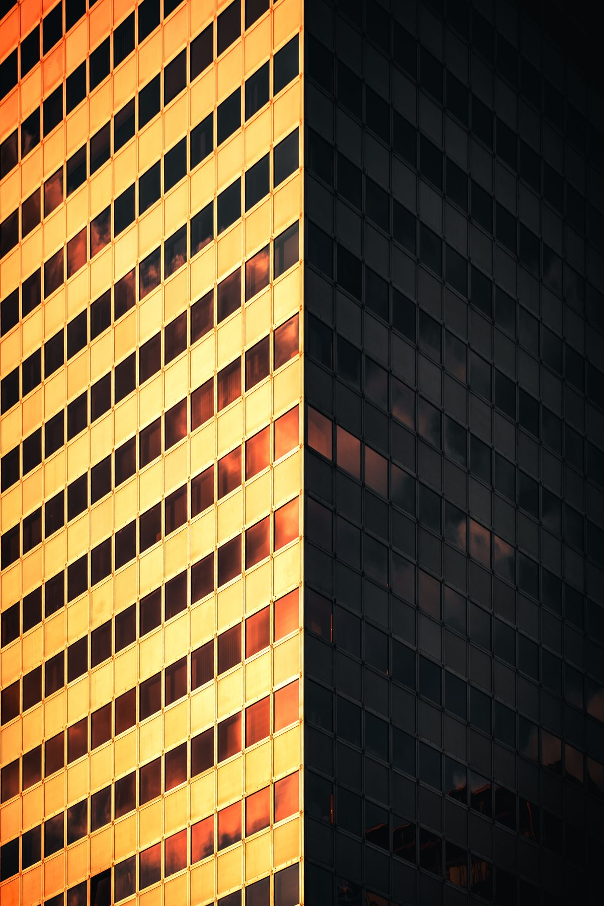
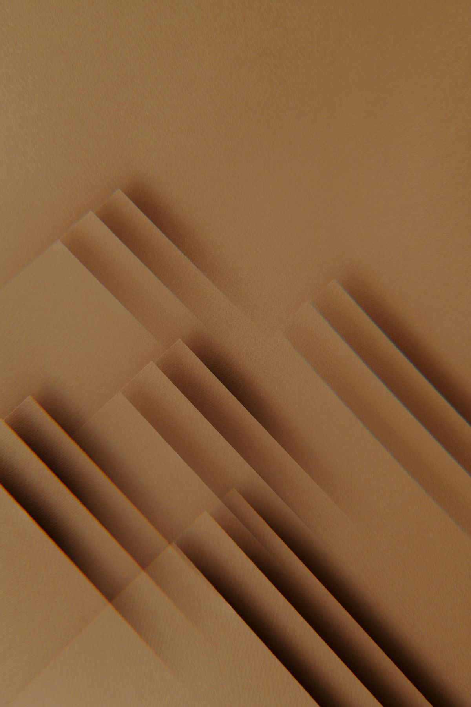
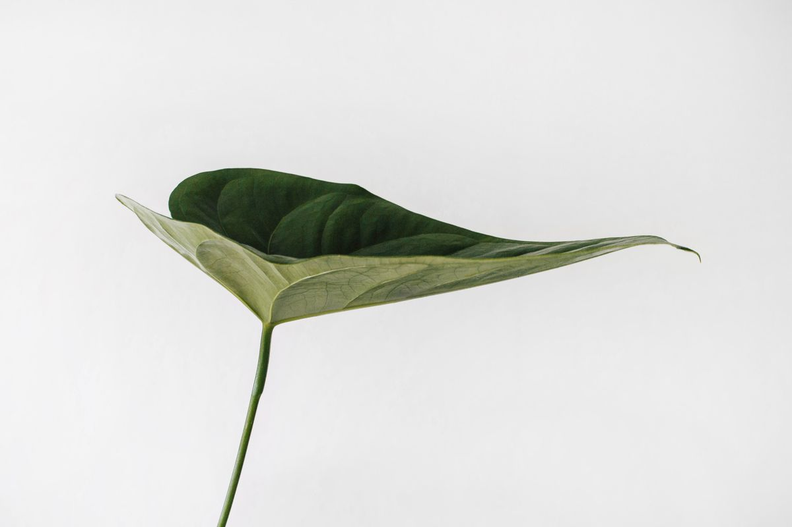

SHAPE THE WAY YOU LIVE.form.
EDITION 01 / SPACESIndependent design studioDhaka · Available everywhere
Brand identity & social content
Good design.
Every day.
From your first impression to your next post.
One designer. A whole world of possibilities.

SPACES FOR WHAT'S NEXTform.Architecture concept / 01
DESIGN DAILY
STUDIO EXPERIMENTS / 2026Make
some
room.
STUDIO EXPERIMENTS / 2026Make
some
room.
A new point of view.01—03
Every detail,
connected.
connected.
THE DAILY PALETTE
001 / PLAY IT YOUR WAY
Scroll to set things in motionIdentity. Content. Continuity.DD / 001
Your business has a personality. Let's give it a visual language.
We make identities with a point of view, and social content that carries it forward. Same idea. Different formats. Always recognisably yours.
Meet the processA little
perspective.
Three worlds.
One attention to detail.

THOUGHTFULLY PUT TOGETHER.folioObjects with a little more soul.
EDITION 02 / EVERYDAY OBJECTS
A LITTLE ROOM TO BREATHE.still.
EDITION 03 / SLOW LIVINGStudio concepts, not client commissions. Photography: Pexels.
Keep scrolling to exploreOne idea. Every angle.
Start with one clear thought.
Let the system find its way out.
A logo is the beginning.The system is what makes it yours.
Brand foundation
More than
a mark.
A connected set of decisions. A logo, a palette, a voice on the page — all pulling in the same direction.
- 01
Find the idea.
Discovery, positioning, two visual directions.
- 02
Build the language.
Logo suite, colour palette and type pairing.
- 03
Make it usable.
A usage guide and three reusable templates.
03 / THE APPLICATIONFORM·
01 — STUDIO NOTESSpace
for a
new day.Spaces that move with you.
for a
new day.Spaces that move with you.
02 / THE PALETTE4 COLOURS
Clay#FF602E
Ink#181917
Paper#F4F3ED
Leaf#D9E8A0
01 / THE MARKPRIMARY LOGOTYPE
form·Simple enough to remember.Distinct enough to recognise.
Same soul.
New story.
Twelve original posts. Two focused batches.
A feed that feels like it came from one place.
Sample visual system / Studio conceptFind your monthly rhythm
Good work.
Less back-and-forth.
One point of contact from the first question to the last export. Here is what happens between them.
Get specific.
Your offer, audience, deadline and constraints. We agree the brief before we open a design file.
Pick a direction.
We build the visual approach. You gather feedback into one clear response.
Bring it together.
We refine the chosen system and develop the agreed assets in focused batches.
Put it to work.
Organised exports, working files and useful guidance. Ready for your next move.
Small start.
Longer story.
Choose the scope that fits where you are.
Proposed pilot fees, agreed before we begin.
Start here01
Paid trial
BDT 6,500 once
Four original static posts to test the fit with an existing identity.
- 4 original static designs
- 4 short captions from supplied facts
- 1 consolidated review
- Delivered in 5 working days
Build the base02
Brand Foundation
BDT 25,000 per project
A usable identity for digital communication and everyday decisions.
- Discovery + positioning brief
- Two directions, one developed system
- Logo suite, palette, type pairing
- 8–12 page usage guide
- 3 reusable post templates
- Two consolidated revision rounds
Keep the rhythm03
Content 12
BDT 18,000 per month
A dependable monthly batch for a business with a clear offer and usable identity.
- 12 original static designs
- One simple size adaptation each
- 12 short captions + content map
- Two focused delivery batches
- One review round per batch
- Organised exports + working files
Static design and identity, with a defined scope. Video, posting, ad management, photography and website builds are outside these packages.
A few
details.
What does “productized” mean here?+
A defined output, fee, sequence, review limit, and delivery window. It makes the first purchase easier to understand and the work easier to deliver well.
Do you post the content for us?+
No. The studio delivers finished exports, captions, and organised working files. Daily posting, community management, and ad management are outside these packages.
What do you need from my team?+
One decision-maker, accurate product or service facts, approved imagery or assets, and feedback gathered into one clear review.
Can I start without a rebrand?+
Yes. The paid trial and Content 12 can work with a usable existing identity. A full rebrand is never a requirement to buy monthly content.
Got a
good
feeling?
Tell us what you're building.
We'll find the right place to start.
Based in Dhaka, Bangladesh.Design that shows up for your business.